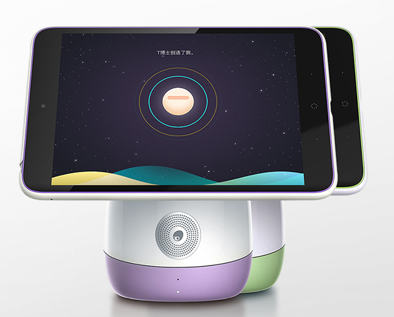

“如果说我们这代人的使命是和世界接轨，下一代人的使命将是超越。”
葡萄智慧教育体系
-
葡萄架PaiBot
- +
-
藤蔓PaiOs
- +
-
葡萄TAG教玩具
- =
-
葡萄棚玩中学
在全球信息化和人工智能的大潮之下，信息素养与计算思维是未来儿童必备的素养和技能。葡萄教育在这个大趋势下布局面向未来的儿童教育生态，从葡萄架——智能终端PaiBot、藤蔓——教育版OS（操作系统）和葡萄——葡萄教育独创 TAG体系(Toy科技玩具、Animation动画和Game游戏),三个层面来打造葡萄智慧教育体系。
智趣教室有什么？
What's the classroom?
-
以游戏化编程
为特色 -
TAG激发孩子
好奇心和探索精神 -
五大领域
AR玩教具 -
96节趣味
探索小课堂 -
分析智能终端数据
生成兴趣报告
葡萄教育的教学模式减轻了老师们制作课件的压力，让老师有更多的时间关注幼儿解读幼儿。也给孩子们有了更多自己解决问题的空间，能够更大的发挥孩子们的主动性，孩子的动手能力也从中得到了培养。
一一上海七宝中心幼儿园
案例展示区
-

上海世外集团小学 上海世外集团小学
-

上海市闵行区七宝中心幼儿园 上海市闵行区七宝中心幼儿园
-

上海市静安区安庆幼儿园 上海市静安区安庆幼儿园
-

无锡震泽实验幼儿园 无锡震泽实验幼儿园
上海世外集团小学选择葡萄培养未来人才
2017年1月18日，葡萄教育进入上海世外集团小学，为世外小学的师生们展示了葡萄教育的教学过程。
世界外国语小学极具名气，成立于1993年，以国际化为手段，本土化为目的，融合各国的教育优势，解构引进的课程。在课程选择中，世外小学极具发展的眼光，着眼于未来。
在全球信息化和人工智能的大潮之下，信息素养与计算思维是未来儿童必备的素养和技能。
在科技领域：谷歌用硬件（Chromebook）、操作系统Chrome、云服务、投资（Google Venture和CapitalG）投身于教育；微软用PC、office操作系统、云服务Azure、Minecraft游戏、人工智能等方式切入教育；苹果用IPAD等教育设备、ConnectED教育项目、收购等方式进入教育。
而葡萄教育在这个大趋势下布局面向未来的儿童教育生态，从葡萄架——智能终端PaiBot、藤蔓——教育版OS（操作系统）和葡萄——葡萄教育独创 TAG体系(Toy科技玩具、Animation动画和Game游戏),三个层面来打造葡萄智慧教育体系。
这套体系得到了上海世外集团小学的认可。在展示过程中，Paibot和Hello编程这两款葡萄教育中的明星产品，吸睛十足。

（葡萄培训师正在给康外老师培训）
（葡萄教育的老师给康外学生上课）
Paibot机器人电脑是葡萄教育的智能终端，这款产品获得了“2016中国互联网速途风云榜”评定的“年度最具发展潜力智能硬件”荣誉奖项。Hello编程这款产品此款产品曾作为“脑动大联盟”的比赛工具，获得了广大家长和孩子的喜爱。
世外小学与葡萄教育的合作是对未来教育方式的探索，无论是世外小学还是葡萄教育都将在这条道路上不断精进。
（学生自由体验葡萄产品）
上海市七宝中心幼儿园选择葡萄教育麦斯丝获个性化学习应用成果展示一等奖
上海市七宝中心幼儿园凭借麦斯丝在2016全国新技术支持下的个性化学习应用成果展示活动中斩获一等奖。
上海七宝中心幼儿园现有30个班级，1000多名幼儿，还有分园5个，总的幼儿人数2300多人，在编教职工172人，辅助用工121人，2007年争创为上海市一级幼儿园，2011年创建成为上海市文明单位。
在教育信息化的大背景下，上海七宝中心幼儿园选择葡萄教育作为合作伙伴。
葡萄教育致力于为全球儿童提供前沿的智慧教育解决方案。解决方案包含教育与评估两大板块。教育板块中，葡萄教育将科技（AR虚实互动、机器人和人工智能）融入到教学，独创TAG体系（Toy科技玩具、Animation动画和Game游戏）和编程教育体系，激发孩子探索与学习的兴趣。评估板块里，葡萄教育将儿童的探索与学习过程形成数据输出，对每个孩子进行兴趣和能力的个性化评估，助力孩子成长。这与国家政策不谋而合，可见教育信息化已经是教育未来的发展趋势。
上海市七宝中心幼儿园在本次选择了葡萄教育的多款产品，有智能终端PaiBot，儿童编程学习产品Hello编程，还有数学学下产品麦斯丝。

PaiBot是一款智能终端产品，专门为儿童设计的一款儿童平板电脑。它具有保护视力、APP分级、防沉迷等特点麦斯丝和Hello编程这些产品运用到他们的教学过程中。
麦斯丝是一款适用于幼升小儿童学习数学的产品，让孩子不再觉得数学是枯燥乏味的，也让家长更有耐心的去教学。Hello编程是一款用简单的积木式指令模块配合生动三维影像，AR科技结合教育，让孩子早人一步get新时代的必备技能——编程技术的产品。
这些产品都可以让家长同步孩子在玩的时候的信息，包括排名、时间、关数等。这些产品不仅能让教育信息化，也可以让孩子有个性化的发展。
根据《教育部办公厅关于做好全国教育科学“十三五”规划2017年度课题组织申报工作的通知》教育信息化将作为重要课题在2017年进行投入和研究。
葡萄教育目前已经从葡萄架——智能终端PaiBot、藤蔓——教育版OS（操作系统）和葡萄——葡萄教育独创 TAG体系(Toy科技玩具、Animation动画和Game游戏),三个层面来打造葡萄智慧教育体系。在教育信息化的大方向上继续前行。
上海市静安安庆幼儿园选择葡萄教育产品“Hallo编程”斩获个性化学习成果展示一等奖
安庆幼儿园凭借葡萄教育产品“Hello编程”在2016全国新技术支持下的个性化学习应用成果展示活动中斩获一等奖。

安庆幼儿园是上海市静安区教育局举办的全日制公办幼儿园。经上海市教育委员会、上海市教育评估院评定为“上海市示范性幼儿园”。安庆幼儿园已有80多年办学历史，是上海市“幼儿园课程教材改革研究基地、实践基地”，中国创造学会创造教育研究基地。
这家兼具历史与创新精神的幼儿园在《国家教育事业发展“十三五”规划》中“以教育信息化推动教育现代化，积极促进信息技术与教育的融合创新发展”的大背景下，选择购买葡萄教育产品及服务作为教育信息化的一个重要举动。
葡萄教育致力于为全球儿童提供前沿的智慧教育解决方案。解决方案包含教育与评估两大板块。教育板块中，葡萄教育将科技（AR虚实互动、机器人和人工智能）融入到教学，独创TAG体系（Toy科技玩具、Animation动画和Game游戏）和编程教育体系，激发孩子探索与学习的兴趣。评估板块里，葡萄教育将儿童的探索与学习过程形成数据输出，对每个孩子进行兴趣和能力的个性化评估，助力孩子成长。这与国家政策不谋而合，可见教育信息化已经是教育未来的发展趋势。

个性化学习应用成果展已经在全国连续举办多年，历届活动中的优秀成果在国内被广泛采用和推广，并收到学生、家长和教育界很好的反馈。在一定程度上代表了未来几年个性化教育发展的方向，也越来越受到全国中小学、幼儿园的重视。
目前国内的个性化学习应用还在发展之中，在未来，葡萄教育会继续在这个领域专研，希望将更好的产品带给大家。
无锡震泽实验幼儿园
无锡震泽实验幼儿园选择葡萄教育淘淘向右走获个性化学习应用成果展示一等奖
2016年10月28日—31日，2016新技术支持下的个性化学习高峰研讨和应用成果展示活动在湖北武汉举办，本次活动由中国教育技术协会主办。活动中无锡市震泽幼儿园选择了葡萄教育产品应用在教学中，获得了个性化学习应用成果展示一等奖。

葡萄教育致力于为全球儿童提供前沿的智慧教育解决方案。解决方案包含教育与评估两大板块。教育板块中，葡萄教育将科技（AR虚实互动、机器人和人工智能）融入到教学，独创TAG体系（Toy科技玩具、Animation动画和Game游戏）和编程教育体系，激发孩子探索与学习的兴趣。评估板块里，葡萄教育将儿童的探索与学习过程形成数据输出，对每个孩子进行兴趣和能力的个性化评估，助力孩子成长。
无锡市震泽幼儿园是最早使用葡萄教育产品及服务的园所之一，老师将葡萄科技的益智七巧板科技玩具——淘淘向右走应用在教学中，通过江佳丽老师定制并执教的《七巧板王国》课程，给现场评委及各参赛幼儿园留下了非常深刻的印象。
淘淘向右走这款产品将经典的七巧板与AR图形颜色识别系统完美结合。在本次的活动中体现了这款产品在儿童的个性化学习的良好应用。

个性化教育是未来的教育趋势，信息素养与计算思维是未来儿童必备的素养和技能。葡萄教育在这个大趋势下布局面向未来的儿童教育生态，并与无锡市震泽幼儿园这类倡导“为不同的幼儿提供更加丰富的个性化教学机会”园所有更多双赢的合作。